A Mancala roguelike deckbuilder about marbles, combos, and broken rules.
ARCHIUSDEV / PUBLIC MEDIA HUB
Build a pouch.
Break the rules.
Mancalero is a roguelike deckbuilder inspired by Mancala, where special marbles, evolving boards, and rule-changing bosses turn a timeless strategy game into a tactile combo chase.
Playtest: completed Aug 7–16, 2026 · Free demo: live now · Steam Next Fest: registered Oct 19–26, 2026 · Release: November 4, 2026

DeveloperArchiusDev
FormatSolo indie game
PlatformWindows · macOS · Linux
GenreRoguelike deckbuilder
01 / PLAY THE DEMO
Play the current Mancalero demo.
The public demo is now available on Itch. Launch the playable build below to try Mancalero’s full three-table demo loop, including special marbles, blessings, bosses, and Endless Mode.
PUBLIC ITCH DEMO · Opens the current playable build and download options.
01 / COPY
Universal pitches
Ready-to-use copy for forms, press pages, creator outreach, and showcase submissions.
Build a pouch of special marbles, sow explosive combos, and face bosses that rewrite Mancala in this tactile roguelike deckbuilder.
Mancalero reimagines Mancala as a roguelike deckbuilder. Collect rule-breaking marbles, discover powerful synergies, master changing boards, and survive bosses that twist the rules of play. Every run asks you to read the board, shape your pouch, and turn one clever move into a ridiculous score.
Mancalero is a roguelike deckbuilder inspired by Mancala. Build a pouch filled with special marbles, then sow them through colourful boards to trigger extra turns, damage chains, score multipliers, and unexpected synergies. Between encounters, choose new marbles, blessings, pouches, and upgrades that shape the next run. The journey moves through evolving tables and bosses that change how Mancala works, asking you to adapt instead of repeating one solved strategy. With a tactile paper-pixel presentation and an original soundtrack, Mancalero is designed for players who enjoy readable strategy, satisfying combo escalation, and the surprise of a familiar game becoming something new.
Mancalero takes one of the world's oldest strategy games and turns it into a modern roguelike deckbuilder. Each run begins with a pouch of marbles and a board full of possibilities. Sow them through Mancala pits, read the resulting board state, and build toward chain reactions that can create extra turns, damage, score multipliers, and entirely new lines of play.
Special marbles give every run a different shape. Blessings and upgrades let you push a strategy further, while changing boards and rule-bending bosses force you to rethink the habits that carried you through the last table. The goal is not simply to play Mancala well. It is to understand how the rules, the pouch, and the opponent can be made to work together.
Mancalero combines tabletop tactility, paper-pixel presentation, strategic decision-making, and the escalating satisfaction of a build that starts sensible and ends gloriously unreasonable. It is being developed by ArchiusDev, a solo Ghanaian-Canadian indie developer.
02 / FACT SHEET
At a glance
Use this block as the source of truth for submissions and media coverage.
- Title
- Mancalero
- Developer
- ArchiusDev
- Developer type
- Solo indie developer
- Identity
- Ghanaian-Canadian developer
- Genre
- Roguelike deckbuilder / strategy / board game
- Platform
- Windows · macOS · Linux via Steam
- Playtest
- Completed Aug 7–16, 2026 · no key required
- Public demo
- September 15, 2026
- Full release
- November 4, 2026 · tentative
- Price
- $12.99 USD · 10% launch sale planned
- Soundtrack
- Standalone OST + Marbles and Music bundle
- Store page
- Steam wishlist ↗
03 / THE GAME
What makes it Mancalero
The three promises to keep consistent across every channel.
01
Rule-breaking marbles
Build a pouch of special marbles and find the synergies that turn ordinary sowing into a combo engine.
02
Boards that keep moving
Each table brings a new strategic question, with changing layouts and mechanics that reshape how a run unfolds.
03
Bosses with opinions
Survive encounters that rewrite the rules of Mancala instead of simply adding more health to the opponent.
"A tactile storm of colourful, rule-breaking marbles ricocheting through carved Mancala boards as scores and combos erupt."
Visual hook04 / MEDIA
Media assets
Current Steam screenshots, key art, GIFs, soundtrack resources, and the complete Steam capsule suite for coverage and creator use.
October 2026 Steam Next Fest
60.2 sec · 1080pMancalero Demo Release Trailer
The public demo is live now, and Mancalero is registered for October’s Steam Next Fest. A substantial v1.02 update is in development with further balance, polish, and quality-of-life improvements.
Vertical social cut · YouTube Shorts / Reels / TikTok
60.0 sec · 1080 × 1920Mancalero Demo Release Trailer — Short Cut
A full-height 9:16 version prepared for YouTube Shorts, Instagram Reels, and TikTok. The free demo is live, Mancalero is registered for October’s Steam Next Fest, and a substantial v1.02 update is coming.
Steam store reference
Current Steam screenshots
This gallery mirrors the screenshot set currently published on the Steam store. Each frame keeps its full 16:9 composition instead of being cropped into a thumbnail.


Scroll horizontally to browse · click any screenshot to open the full-size image ↗
Steam-ready branding
9 PNGs · 8 sizesComplete capsule suite
Native-size PNG exports for the Steam store surfaces. Every preview preserves the full frame instead of cropping it; click a card to open or download the original.
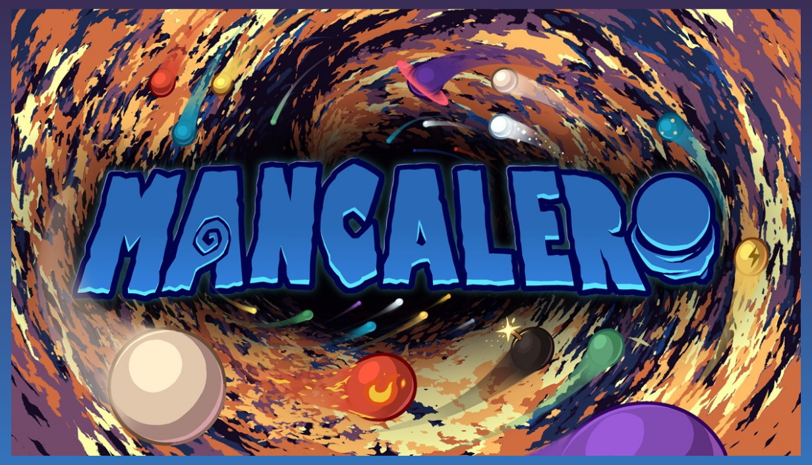
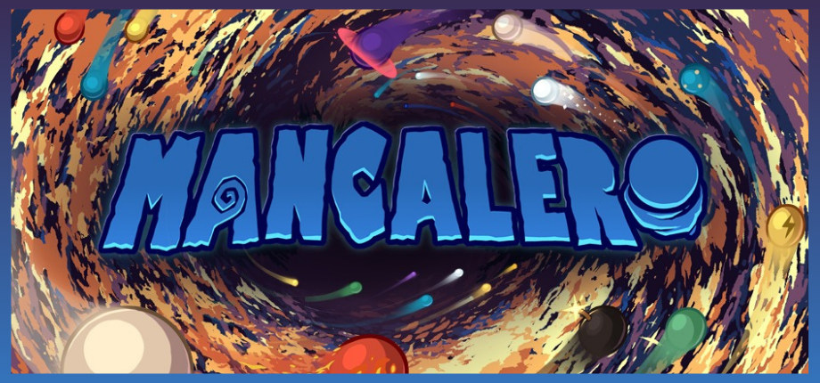
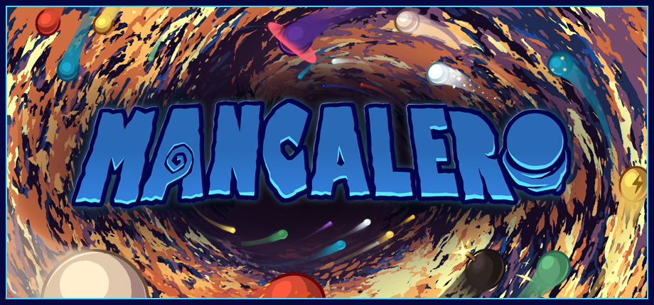
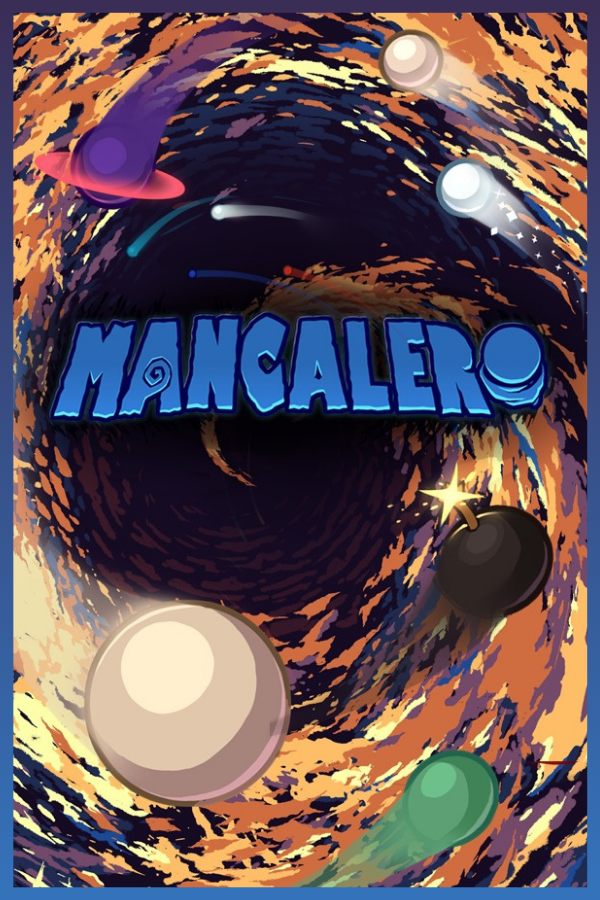
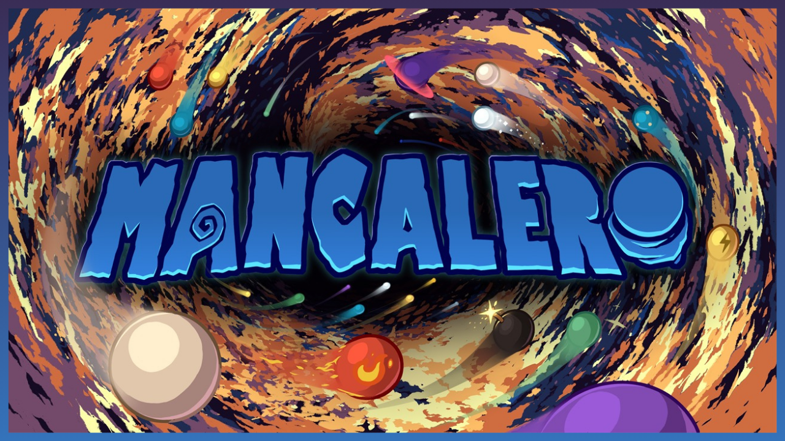
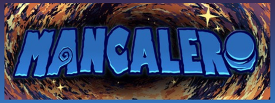
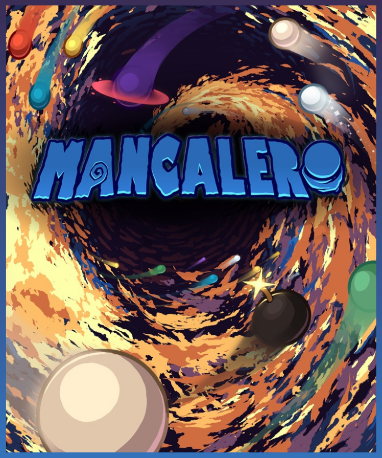
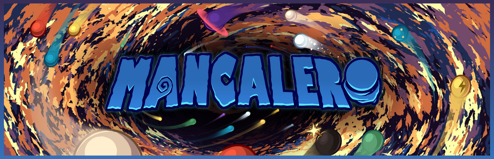
Alternate treatments: both 920 × 430 header versions are included so an editor or curator can choose the standard or Indigo/Cyan-outline presentation.
 ORIGINAL SOUNDTRACKListen on YouTube while you work.
ORIGINAL SOUNDTRACKListen on YouTube while you work.Reference set
23 PNGsMarble gallery
Selected marble designs from Mancalero’s broader development. The public demo includes a subset of this collection.
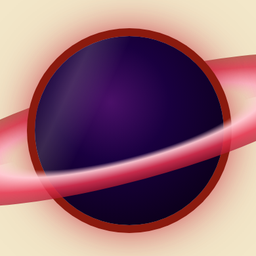
Blackhole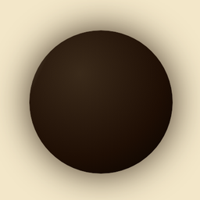
Black Reversi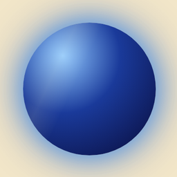
Blue Planet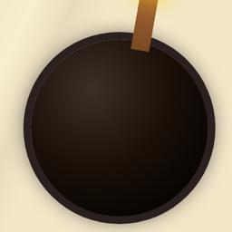
Bomb Bone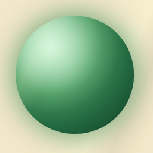
Boomerang Dice Fire Flood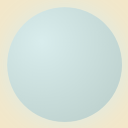
Glass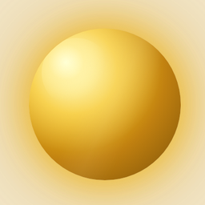
Gold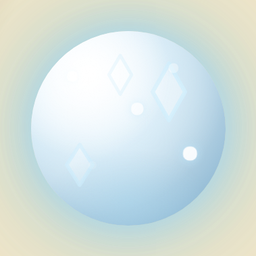
Ice Lightning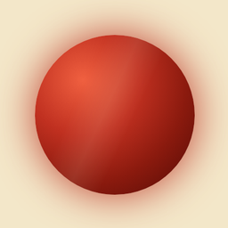
Multiply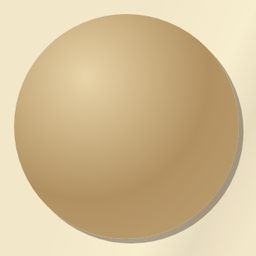
Normal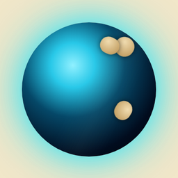
Orbital Poison Reversi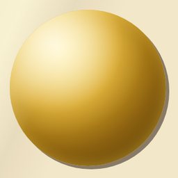
Skip Star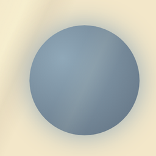
Steel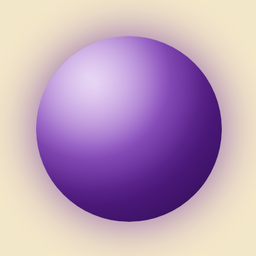
Thief White ReversiBlackhole1 / 23
Use the arrows to browse · click the marble to open or download the full PNG.
05 / SUBMISSION PACKAGE
INDIE Live Expo, ready to download.
A public mirror of the exact media set prepared for INDIE Live Expo 2026.12.1. Use the matching download for each form field without needing Drive access.
INDIE LIVE EXPO 2026.12.1Submitted · awaiting selection
Open official entry ↗Applied September 3, 2026 · event December 1, 2026 JST · public media mirror supplied.
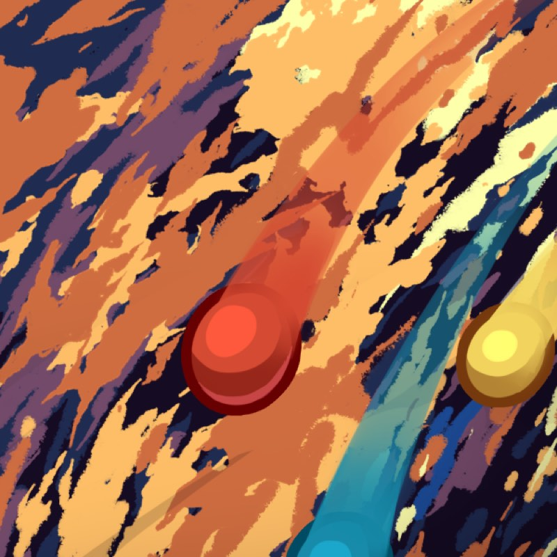
Preview screenshot · 1:1
Download ↧Square profile image
800 × 800 · JPG · 121 KB · no text/UI/logo overlay
{kind=link}
For the form
Use the current store reference above.
The square profile image remains available here for Preview Screenshot. For high-resolution gameplay stills, use the current Steam screenshot gallery in the Media section.
Specs checked
- The square image is 1:1 and under 250 KB.
- The Steam gallery uses the live store screenshot set.
- All visible media here is static for reliable press-kit browsing.
06 / FOR CREATORS
Keys, streams, and coverage
Everything needed to decide whether Mancalero is a fit for your audience.
Preview access
The public Steam Playtest ran August 7–16, 2026 and required no key. Creators and press may request limited private demo access before the public demo on September 15, 2026. Include your channel or outlet, audience, and preferred coverage window. Access is limited and not guaranteed.
Request private access ↗Streaming policy
Streaming and recording are welcome for the demo. Please credit Mancalero and link the Steam page, Discord, or this media hub. Please do not redistribute private keys or game files.
Steam page ↗Good audience fit
Strategy, roguelike, deckbuilder, board-game, indie discovery, and creators who enjoy explaining the decisions behind a run.
Download press kit ↗07 / BRANDING
Words to use
Keep the public description vivid, specific, and easy to repeat.
Preferred description
"A roguelike deckbuilder inspired by Mancala."
"Build a pouch of rule-breaking marbles and sow explosive combos across colourful Mancala battles."
Emphasize
- Special marbles and synergies
- Evolving boards
- Bosses that change the rules
- Tactile paper-pixel presentation
- Original soundtrack
Avoid reducing it to
- "Just a Mancala clone"
- A generic card game
- Only a score-attack game
- A finished product before the announced milestone
08 / DOWNLOADS
Press kit and downloads
Everything is kept at stable relative paths so old press links continue to work as the hub evolves.
09 / CHANGELOG
Project notes
Small, useful updates for people following the project.
Public Playtest complete
The no-key Steam Playtest ran August 7–16, 2026. Feedback is now being carried into the live public demo.
Public demo live
The free demo is live now on Steam and itch.io. Mancalero is registered for October’s Steam Next Fest, and a substantial v1.02 update is in development.
Steam Next Fest
The October event is the next major visibility milestone before the planned full release.
Full release planned
The current tentative full-game target is November 4, 2026.
10 / CONTACT
Follow the next marble
ArchiusDev is building Mancalero in public and welcomes thoughtful coverage, showcase conversations, and creator connections.
Public identityArchiusDevPress contactneedle-blares.0m@icloud.comFor coverage, showcase, creator, and collaboration inquiries.